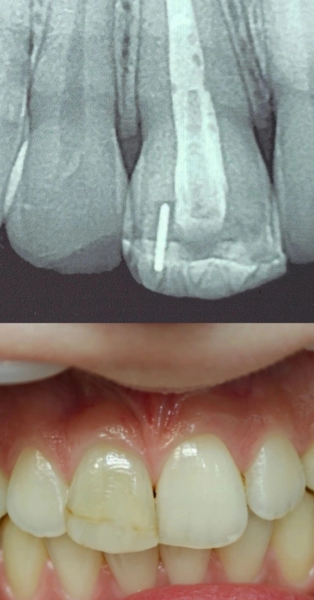

Chairside 29
تغییر رنگِ دندانِ اندوشده و روکشی که هنوز لازم نبود

بیمار برای روکش آمده بود، با تشخیصی که قبلاً برایش گذاشته شده بود. کاری که در این ویزیت لازم بود اجرای آن درخواست نبود، بررسیِ این بود که آیا در این مرحله روکش لازم است یا نه.
شرحِ مراجعه. بیمار با سابقهٔ ضربه به دندانِ قدامی، درمانِ ریشه و ترمیمِ کامپوزیت مراجعه کرد. شکایتش تغییر رنگِ دندان بود. پیش از این به او گفته شده بود که راهحل روکش کردن است و خودش هم با همین درخواست آمده بود.
ارزیابی. در رادیوگرافی، پالپ چمبر تمیز نشده و گوتاپرکا در آن باقی مانده بود. این یافته علتِ تغییر رنگ را توضیح میداد؛ یعنی تغییر رنگ ماهیتِ داخلی داشت و علتش هم قابلِ شناسایی و قابلِ رفع بود، نه یک وضعیتِ ثابت که فقط بشود پوشاندش.
در معاینهٔ بالینی، بیش از سهچهارمِ تاجِ دندان ساختار و تکسچرِ طبیعیِ خودش را حفظ کرده بود. این نکته در دندانِ قدامی وزن دارد. بازسازیِ تکسچرِ طبیعیِ مینا با روکش کارِ سادهای نیست و در عمل هم معمولاً کسی سراغِ این سطح از جزئیات نمیرود. یعنی با تراش، چیزی از دست میرفت که جایگزین شدنش تضمینی نداشت.
تصمیم. روکش کردنِ این دندان در این مرحله دو هزینه داشت: حذفِ ساختار و تکسچرِ سالم، و وارد کردنِ بیمار به مسیرِ درمانهای تهاجمیتر، چون بعد از تراش راهِ برگشتی وجود ندارد و هر مشکلِ بعدی از سطحِ بالاتری از مداخله شروع میشود. در مقابل، علتِ تغییر رنگ مشخص بود و گزینهٔ کمتهاجمتر هنوز امتحان نشده بود.
بیمار را به متخصصِ ترمیمی ارجاع دادم برای سفید کردنِ داخلی (internal bleaching) و تعویضِ ترمیمِ کامپوزیت. از این نقطه تصمیمِ درمانی با اوست: اگر بلیچینگِ داخلی را مناسب بداند همان را انجام میدهد، و اگر لازم بداند درمانِ ریشه را هم بازبینی یا تکرار میکند. اگر به هر دلیلی به این نتیجه برسد که این مسیر شدنی نیست، بیمار برای روکش برمیگردد.
️Clinical Tip: وقتی بیمار با تشخیصِ آماده و درخواستِ مشخص مراجعه میکند، اولین کار پذیرفتنِ آن درخواست نیست. تغییر رنگ بهتنهایی اندیکاسیونِ روکش نیست، بهویژه وقتی علتش شناساییشدنی و قابلِ رفع باشد. تراش یک تصمیمِ یکطرفه است؛ فرصت برای روکش کردن همیشه هست، برای برگرداندنِ ساختارِ تراشیدهشده نیست.
محتوای این صفحه برای استفادهٔ آموزشی دندانپزشکان و دانشجویان دندانپزشکی تهیه شده است.